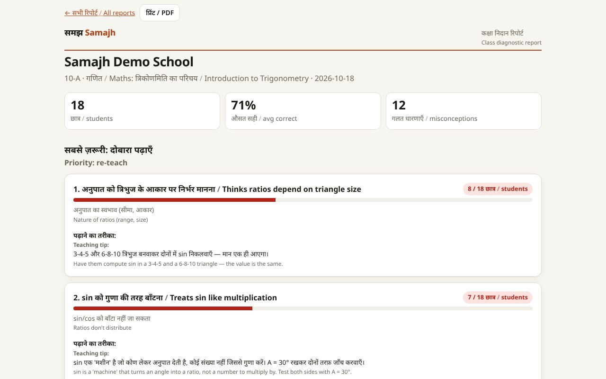
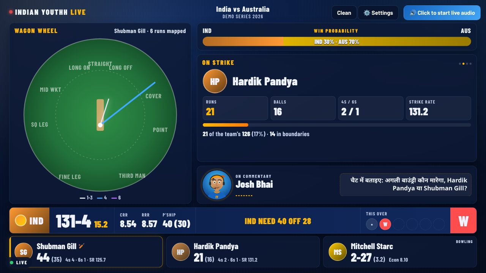

I build LLM systems that check their own work.
Retrieval, document extraction, evaluation and guardrails, on a solid Python and data-engineering base. GenAI platforms at Impetus Technologies today; ETL and data pipelines at TCS before that.
- Generative AI Engineer at Impetus Technologies.verified · Oct 2025 – present · proof ↓
- Cut repeat-query latency from 35 s to 2 s with LLM response caching.verified · sales RAG, in production · proof ↓
- Raised document-extraction accuracy from 60% to 85%+.verified · finance document pilot · proof ↓
- Built Samajh: tests that show why students go wrong.verified · live project · try it ↓
- Built a real-time Hindi cricket commentary engine with LLM guardrails.verified · project · see it ↓
Every claim here was checked against my resume and links to its proof on this page.
Pick a wrong answer. Samajh tells you why.
Marks show how much went wrong. Samajh shows why. Every wrong option is tied to a specific misconception, so one short test tells a teacher what each student misunderstood and how to re-teach it. This is a real question from the app; try it.
How a question gets into the bank
AI writes fast and is confidently wrong sometimes. So no question reaches a student on one model's word.
- 1DraftGemini writes a chapter against a strict JSON schema: concepts, misconceptions, and options that each reveal one misconception.
- 2Blind solveA second model answers every question without seeing the key. Any disagreement is flagged.
- 3Teacher approvalA human edits and approves before students see it. A "report error" queue catches anything left.
- 4DiagnoseWrong answers roll up into a class report and a printable re-teach plan.
- LLM rubric grading for free-text "explain why" answers. If the model fails, the answer goes to the teacher; it never invents a grade.
- Full UP Super TET and UPPSC PCS mocks with negative marking, ranks and solutions in both languages.
- Model fallback chain for free-tier quotas, CSP / CSRF / rate limits, Postgres in production.

Ball by ball, in Hindi. Every line fact-checked against the score.
A live engine that turns match data into spoken Hindi commentary with four AI personas. These are real lines the engine generated during a scripted demo match; step through them.
What keeps it honest on air
- 1Match stateEvery ball updates a state engine: score, partnerships, milestones, streaks, the chase.
- 2WriteAn LLM writes the line in the persona's voice, as JSON, inside a 3.5-second budget.
- 3Fact checkThe line is blocked if it contradicts the score or the ball's result. Templates take over, so commentary keeps going.
- 4Speak & directMulti-provider TTS with retries and caching; a "director" times lines and cuts filler when a ball lands.
- Several matches run concurrently over WebSockets, each with its own broadcast page.
- Manual-scoring mode for matches with no data feed; every match is recorded and can be replayed offline.
- Regression tests written from bugs seen during a live final.

A voice assistant grounded in the Bhagavad Gita
Speak a question and get guidance drawn from the Gita's verses, answered in Hindi. Verses are embedded with Gemini and matched by cosine similarity, with a keyword fallback; voice runs in real time over WebSockets with the Gemini Live API.
Where I ship this for a living.
Remote, India
Impetus Technologies
repeat-query latency with deal-aware LLM response caching, 3–5 fewer LLM calls per user.
extraction accuracy, driven by an automated evaluation that compares each PDF with its extraction.
sales reps on AWS Bedrock RAG; daily AI nudges across 5,000+ deals.
- Qwen VLM extraction for 5+ formats, Qdrant search, Langfuse tracing; Redis per-user rate limiting to cap LLM cost.
- Context engineering PoCs: semantic definitions, metrics and a Turtle (RDF) ontology for Databricks Genie; most of an end-to-end AWS Context Ontology Accelerator PoC.
Pune, India
Tata Consultancy Services
- RAG-based production support assistant over the team knowledge base.
- Business-critical ETL pipelines 50% faster; PostgreSQL response times down 60%+ through query and index tuning.
B.Tech, Computer Science
LLM & GenAI
Models & platforms
Backend & data
Building something with LLMs? Let's talk.
Open to Generative AI and AI engineering roles. Email is the fastest way to reach me.
हवा में गई… और हेड ने लपक लिया! गिल 44 रन बनाकर आउट। स्टार्क को मिली बड़ी कामयाबी। भारत अब 131 रन पर 4 विकेट।
“Up in the air… and Head takes it! Gill goes for 44. A big one for Starc. India 131 for 4.”